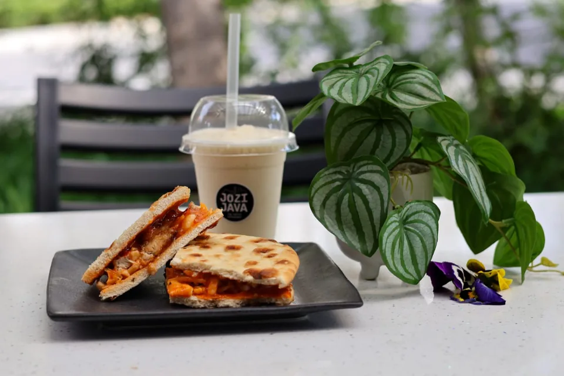
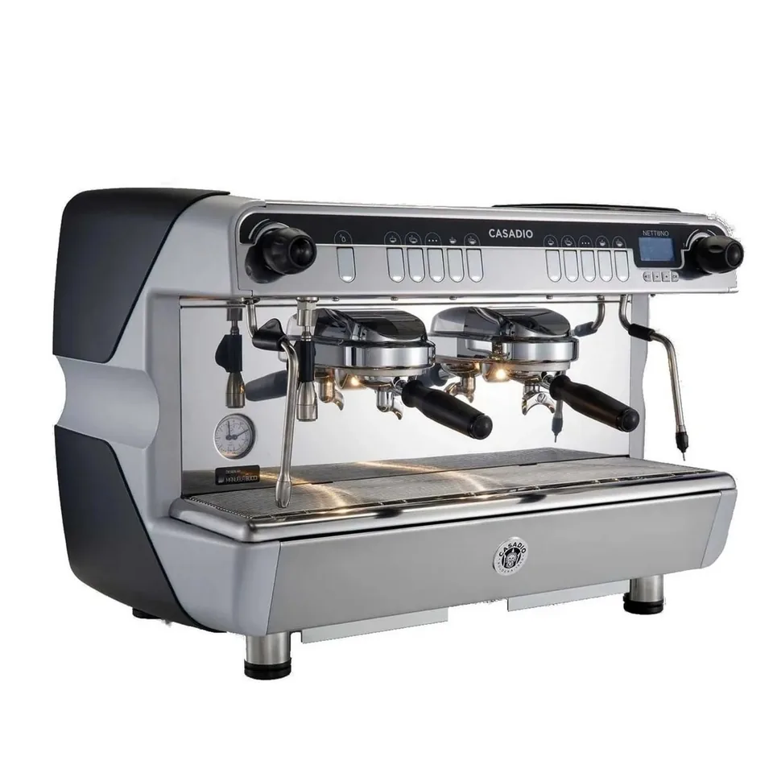
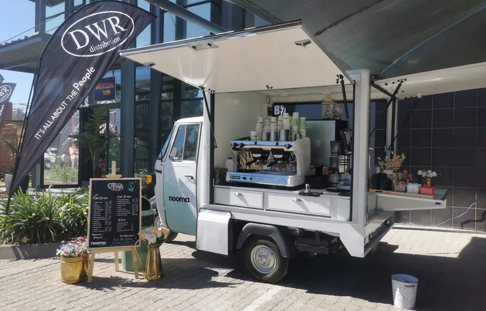

Brew guide / 4 min read
Whole bean or ground? Find your grind.
The simple question that makes a big difference: what are you brewing with?
Read the guide →3 practical guides

The simple question that makes a big difference: what are you brewing with?
Read the guide →
Choosing a machine is easier when you know who will make the coffee, and who will look after it.
Compare your options →
Site, power, water and a realistic budget: the useful questions before your Tuk Tuk build.
See the checklist →